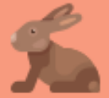

Página personal de Mar Prados Espigares
Diseño web
Me encanta el diseño web. He tocado un poco de css3, html5 y algo de javascript. Cada dia prentendo aumentar un poquito más mis conocimientos, que luego comparto con alumnos."siempre aprendiendo"


Montaña
Me encanta salir a hacer rutas por la sierra. Es maravilloso estar rodeada de árboles, aire fresco y naturaleza. Sentir esa sencación de euforia y libertad cuandi llegas a la cima...Próximo objetivo.. el Mulhacén.
Animales
Cuido, junto con mi hija de una mascota llamada Sara. Es una conejita blanca y negra. La cepillamos, le damos su comida, la llevamos al veterinarios.. y de vez en cuando la llevamos al parque donde corretea a sus anchas.